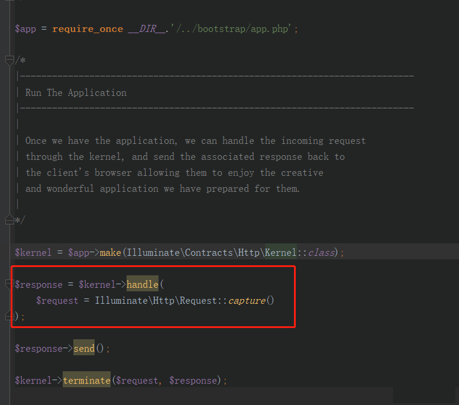
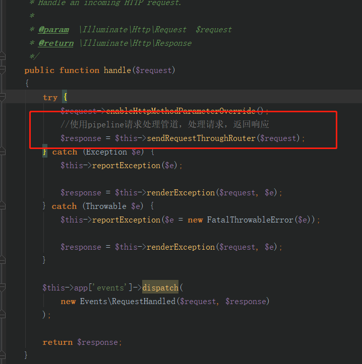
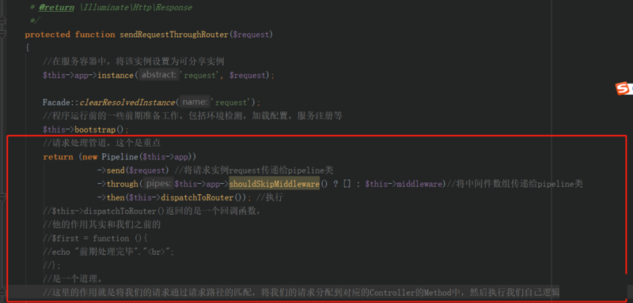

原文连接:https://www.cnblogs.com/it-3327/p/11794804.html
本篇文章给大家带来的内容是关于laravel框架的中间件middleware的详解，有一定的参考价值，有需要的朋友可以参考一下，希望对你有所帮助。
laravel中间件是个非常方便的东西，能将一些逻辑实现解耦，并且在laravel中，
中间件的编写也是非常的方便。谁用谁知道。
1.装饰器模式
laravel中的中间件使用的就是装饰器模式，什么是[装饰器模式][1]，先去了解一下吧，这里大概说一下，就是这个模式主要的就是用于解决 当一个类需要动态扩展功能的时候，使用继承的方式会让子类膨胀，并且这个扩展的功能是个公用功能的情况下，不利于功能的复用以及代码的解耦。
在laravel，使用对于使用这种模式的功能，称为请求处理管道，也就是pipeline
|
1 2 3 4 5 6 7 8 9 10 11 12 13 14 15 16 17 18 19 20 21 22 23 24 25 26 27 28 29 30 31 32 33 34 35 36 37 38 39 |
|
输出：
这个就是一个简单的基于装饰器模式的管道。他的本质其实就是基于闭包和递归。
通过分析这个程序，对于最终生成的$a变量，它的值大概是这样的 MiddleStepOne.handle(MiddleStepTwo.handle(first))，当执行的时候因为在handle中有个next()函数的存在，所以这是一个递归的调用。对于laravel的中间件，他的实现原理也是和这个一样的。


链接：https://pan.baidu.com/s/1v5gm7n0L7TGyejCmQrMh2g 提取码：x2p5
免费分享，但是X度限制严重，如若链接失效点击链接或搜索加群 群号518475424。
2.laravel中的中间件和请求处理管道
在laravel中，我们我们可以通过设置中间件来在请求执行之前做一些预先的处理。
从请求入口 public/index.php开始

重要的是这段代码：即 处理请求，返回请求的响应
|
1 2 3 |
|
接着我们进入kernel中看他的具体实现 IlluminateFoundationHttpKernel.php中


关于dispatchToRouter()函数请大家自己去看，这里就不多说了。
接下来就是激动人心的PipeLine类了，
|
1 2 3 4 5 6 7 8 9 10 11 12 13 14 15 16 17 18 19 20 21 22 23 24 25 26 27 28 29 30 31 32 33 34 35 36 37 38 39 40 41 42 43 44 45 46 47 48 49 50 51 52 53 54 55 56 57 58 59 60 61 62 63 64 65 66 67 68 69 70 71 72 73 74 75 76 77 78 79 80 81 82 83 84 85 86 87 88 89 90 91 92 93 94 95 96 97 98 99 100 101 102 103 104 105 106 107 108 109 110 111 112 113 114 115 116 117 118 119 120 121 122 123 124 125 126 127 128 129 130 131 132 133 134 135 136 137 138 139 140 141 142 143 144 145 146 147 148 149 150 151 152 153 154 155 156 157 158 159 160 161 162 163 164 165 166 167 168 169 170 171 172 173 174 175 176 177 178 179 180 181 182 183 184 185 186 187 188 |
|
总的来说pipeLine类的实现和我之前写的修饰器是差不多，这里主要麻烦的地方就在于就在于
protected function carry()函数内部，对于当pip是闭包，字符串，还有对象的处理。
之前觉得laravel的中间件是个很神秘的东西，但是看了之后才觉得也就那样，很精巧，在实际开发中这种模式也是很有帮助的，例如我们目前用的一个gateway项目，因为没有使用任何框架，所以将判断条件剥离，写入到中间件中， 这样实现了一定程度上的模块化编程。